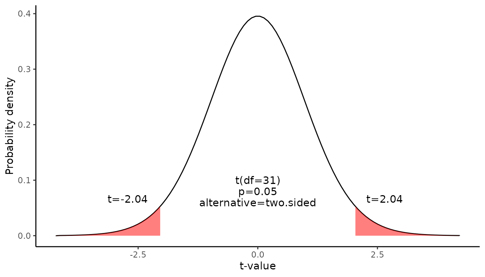

Confidence interval for a mean
Source:vignettes/Confidence_interval_for_a_mean.Rmd
Confidence_interval_for_a_mean.RmdThis document is prepared automatically using the following R command.
library(interpretCI) |
Problem
An inventor has developed a new, energy-efficient lawn mower engine. From his stock of 3200 engines, the inventor selects a simple random sample of 32 engines for testing. The engines run for an average of 20.09 minutes on a single gallon of regular gasoline, with a standard deviation of 6.03 minutes. What is the 95% confidence interval for the average minutes? (Assume that run times for the population of engines are normally distributed. |
Confidence interval of mean
The approach that we used to solve this problem is valid when the following conditions are met.
The sampling method must be simple random sampling.
The sampling distribution should be approximately normally distributed.
Since the above requirements are satisfied, we can use the following four-step approach to construct a confidence interval of mean.
Raw data
The first 10 rows of the provided data is as follows.
[38;5;246m# A tibble: 10 × 1
[39m
mpg
[3m
[38;5;246m<dbl>
[39m
[23m
[38;5;250m 1
[39m 21
[38;5;250m 2
[39m 21
[38;5;250m 3
[39m 22.8
[38;5;250m 4
[39m 21.4
[38;5;250m 5
[39m 18.7
[38;5;250m 6
[39m 18.1
[38;5;250m 7
[39m 14.3
[38;5;250m 8
[39m 24.4
[38;5;250m 9
[39m 22.8
[38;5;250m10
[39m 19.2Sample statistics
The sample size is 32, the sample mean is 20.09 and the standard error of sample is 6.03. The confidence level is 95 %.
Find the margin of error
Since we do not know the standard deviation of the population, we cannot compute the standard deviation of the sample mean; instead, we compute the standard error (SE). Because the sample size is much smaller than the population size, we can use the “approximate” formula for the standard error.
\[ SE= \frac{s}{\sqrt{n}}\] where s is the standard deviation of the sample, n is the sample size.
\[SE=\frac{6.03}{\sqrt{32}}=1.07\] Find the critical probability(p*):
\[p*=1-\alpha/2=1-0.05/2=0.975\]
The degree of freedom(df) is: \[df=n-1=32-1=31\]
The critical value is the t statistic having 31 degrees of freedom and a cumulative probability equal to 0.975. From the t Distribution table, we find that the critical value is 2.04.
df |
0.4 |
0.25 |
0.1 |
0.05 |
0.025 |
0.01 |
0.005 |
0.001 |
29 |
-0.256 |
-0.683 |
-1.311 |
-1.699 |
-2.045 |
-2.462 |
-2.756 |
-3.396 |
30 |
-0.256 |
-0.683 |
-1.310 |
-1.697 |
-2.042 |
-2.457 |
-2.750 |
-3.385 |
31 |
-0.256 |
-0.682 |
-1.309 |
-1.696 |
-2.040 |
-2.453 |
-2.744 |
-3.375 |
32 |
-0.255 |
-0.682 |
-1.309 |
-1.694 |
-2.037 |
-2.449 |
-2.738 |
-3.365 |
\[qt(p,df)=qt(0.975,31)=2.04\]
The graph shows the \(\alpha\) values are the tail areas of the distribution.

Compute margin of error(ME):
\[ME=critical\ value \times SE\] \[ME=2.04 \times 1.065=2.173\]
Specify the confidence interval. The range of the confidence interval is defined by the sample statistic \(\pm\)margin of error. And the uncertainty is denoted by the confidence level.
Confidence interval of the mean
Therefore, the 95% confidence interval is 17.92 to 22.26. That is, we are 95% confident that the true population mean is in the range 17.92 to 22.26.
Result of meanCI()
call: meanCI.data.frame(x = mtcars, mpg)
method: One sample t-test
alternative hypothesis:
true mean is not equal to 0
Results
[38;5;246m# A tibble: 1 × 7
[39m
m se DF lower upper t p
[3m
[38;5;246m<chr>
[39m
[23m
[3m
[38;5;246m<chr>
[39m
[23m
[3m
[38;5;246m<chr>
[39m
[23m
[3m
[38;5;246m<chr>
[39m
[23m
[3m
[38;5;246m<chr>
[39m
[23m
[3m
[38;5;246m<chr>
[39m
[23m
[3m
[38;5;246m<chr>
[39m
[23m
[38;5;250m1
[39m 20.09062 1.0654 31 17.91768 22.26357 18.857 < 2.2e-16Reference
The contents of this document are modified from StatTrek.com. Berman H.B., “AP Statistics Tutorial”, [online] Available at: https://stattrek.com/estimation/confidence-interval-mean.aspx?tutorial=AP URL[Accessed Data: 1/23/2022].